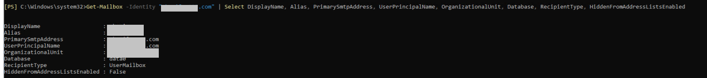
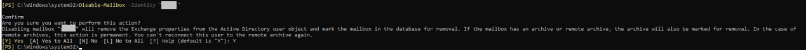

Active Directory用户恢复后，需要在生产端更新用户邮箱状态，并创建新的Active Directory用户与恢复后的邮箱建立绑定关系，以验证恢复后的用户邮箱数据。
操作步骤
- 查询待恢复的邮箱及其绑定的旧用户信息。
- 管理员登录目标Exchange Server数据库所在的客户端。
- 打开Exchange Management Shell。
- 执行以下命令。
Get-Mailbox -Identity "邮箱地址" | Select DisplayName, Alias, PrimarySmtpAddress, UserPrincipalName, OrganizationalUnit, Database, RecipientType, HiddenFromAddressListsEnabled
以Windows Server 2016为例，回显示例如下：

- 对查询到的Active Directory用户进行恢复，具体操作请参见单域控制器场景恢复Active Directory的对象。
- 恢复完成后，执行以下命令来清除旧用户与邮箱的绑定关系。
Disable-Mailbox -Identity "用户名"
以Windows Server 2016为例，回显示例如下：

- 建立步骤2恢复的用户与邮箱之间的绑定关系。
- 登录Exchange邮箱的管理界面，登录地址：https://管理IP/ecp。
- 在导航栏选择“收件人”，选择“邮箱”页签。
- 单击图标，选择“连接邮箱”。
系统弹出“连接邮箱”对话框。
- 选择服务器后在下方选择待连接的邮箱。
- 单击
 图标进行连接操作。
图标进行连接操作。系统弹出提示信息。
- 选择“是，连接到上面显示的用户账户”。

当选择“不，我想连接到其他用户账户”时，在弹出的对话框中选择需要连接的用户账户。
- 单击“完成”。
- 查看邮箱并登录。